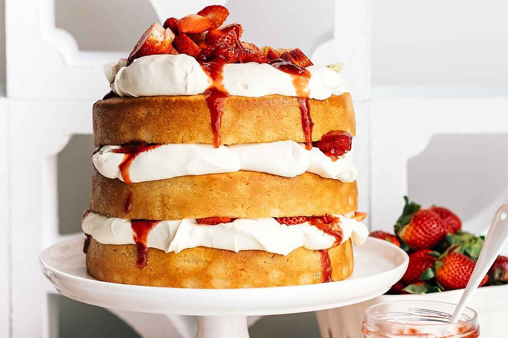

Welcome to The Bakery Crusader, a charming haven for all your culinary cravings!
Nestled in the heart of a quaint, bustling neighborhood, our bakery is a sensory paradise
where the aroma of freshly baked goods mingles with the laughter of satisfied customers.
As you step through the inviting glass door, you'll be greeted by the warm, comforting scent
of oven-fresh delights. The interior of The Bakery Crusader is a delightful blend of rustic
charm and modern elegance. Vintage wooden shelves display an array of delectable treats, and
the soft glow of pendant lights illuminates the cozy seating area where friends and families
gather to savor their favorite pastries.
Our dedicated bakers, skilled artisans of sugar and flour, work tirelessly in an open kitchen,
allowing you to witness their creative magic in action. They knead, roll, and frost with
precision, turning simple ingredients into edible works of art.
At The Bakery Crusader, we believe in indulgence without compromise. Our menu boasts a wide
range of mouthwatering treats, from flaky croissants to decadent chocolate cakes. For those
seeking a taste of tradition, our freshly baked bread and buttery, golden crust pies are a
slice of nostalgia. Gluten-free and vegan options are also available, ensuring that everyone
can enjoy a slice of our sweet heaven.
We take pride in sourcing the finest, locally-sourced ingredients, ensuring that each bite
is a burst of flavor and quality. Whether you're craving a morning pick-me-up with a latte
and a buttery, cinnamon-dusted pastry or planning a special celebration with a custom-designed
cake, The Bakery Crusader has something to satisfy every sweet tooth.
Our bakery is not just a place to grab a quick treat; it's a community gathering spot where
friendships are forged over cups of artisan coffee and conversations flow as smoothly as our
velvety, rich hot chocolate. With cozy seating by the window, you can watch the world go by
as you savor the moment.
So, whether you're stopping by for your daily dose of sweetness or looking for the perfect
dessert to mark a special occasion, The Bakery Crusader invites you to experience the
of exceptional baked goods, crafted with love and devotion. Come join us on this delectable
journey and let our creations be the soundtrack to your memorable moments